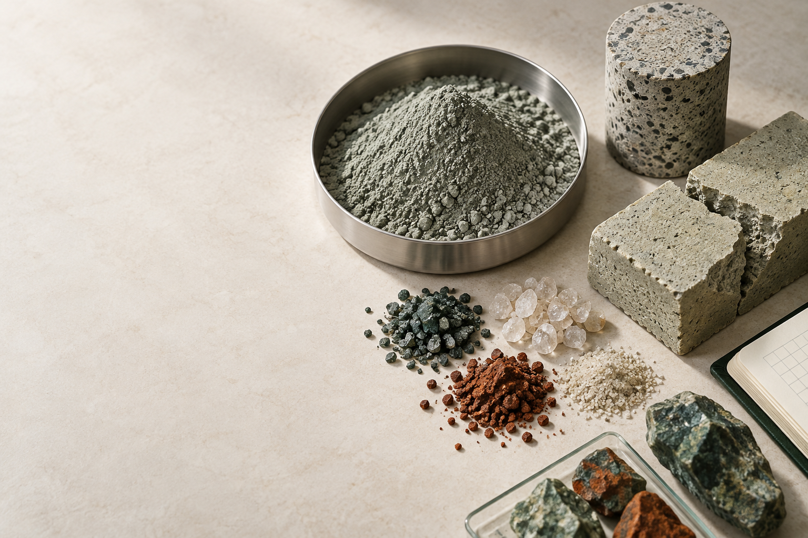

Read the deposit
Build a representative material picture: mineralogy, PSD, geochemistry, moisture, reactivity and variability across the storage history.

Build a representative material picture: mineralogy, PSD, geochemistry, moisture, reactivity and variability across the storage history.
Separate pathways that are chemically plausible from those limited by release behaviour, processing intensity, logistics or regulation.
Design test work around the actual decision: separation, activation, blending, mechanical performance, durability and environmental stability.
Connect the technical result to product specification, market, approvals, quality controls, water balance and closure outcomes.
Decision discipline: a positive lab result is a reason to progress—not evidence that the pathway will transfer unchanged to another tailings stream.
Each record should be read as an engineering starting point, not a transferable specification. We surface the variables that determine whether a pathway is practical at another site.
Mineralogy, particle-size distribution, moisture, sulphur and carbonate balance, residual reagents, metal inventory and variability.
Functional properties are considered beside release behaviour, durability, processing intensity and product-specification requirements.
Reuse sits inside a broader system of permitting, logistics, market demand, closure objectives, water balance and social licence.
Tailings repurposing is being explored across mineral characterisation, separation and reprocessing, ceramics, concrete, geopolymers, environmental performance and closure planning. Waste2Resource brings these threads together so readers can compare both results and limitations.
The research below spans early-stage pathway screening, laboratory material studies and evidence reviews. Each paper answers a different part of the engineering question: what is in the residue, what can it become, what can be demonstrated, and what still requires field validation.
These studies are not product approvals or universal recipes. They record the tests undertaken, the conclusion supported by the authors, and the next decision needed before transfer to another tailings stream or commercial setting.
Material characterisation; lab-scale blend modification; product quality and environmental assessment against standards; cradle-to-gate life-cycle assessment.
Untreated Plombières tailings performed satisfactorily in facing-brick blends and complied with the assessed environmental requirements across use, second-life and end-of-life scenarios. The study reports better environmental performance at a 40 wt% tailings blend.
Next: plant-specific blend and production QA.
Physical, chemical and mineralogical characterisation; EN 12457-2 leaching; 50% and 70% sand replacement; indirect tensile strength, compressive strength and absorption.
The authors conclude the tested tailings were feasible as a sand substitute in concrete blocks. The reported leaching results met the study’s non-hazardous mining-waste limits and the blocks did not produce toxic leachates under the test conditions.
Next: local product standard, durability and pilot manufacturing checks.
Gold and mercury assessment; mix-ratio trials; compressive strength and water absorption testing on cement-tailings bricks.
The tested bricks met the stated international criteria for non-loadbearing masonry, with reported compressive strength of 5.02–13.3 MPa. The analysed mercury concentrations were reported within safe environmental limits for the study samples.
Next: durability, quality-control and production-scale validation.
X-ray diffraction; initial setting, curing temperature and duration; activator-content optimisation; unconfined compressive strength, water absorption and durability properties; cost analysis.
Under the investigated curing and activator conditions, the paper reports geopolymer bricks with strength up to 50.53 MPa that met the cited ASTM and Australian brick requirements.
Next: reagent handling, long-term exposure and plant-scale economics.
Peer-reviewed literature and case studies on iron ore and gold tailings in construction materials, including strength trends and Australian-standards considerations.
The review identifies fine-aggregate substitution as promising, while flagging site-to-site tailings variability, long-term durability, leaching evidence and practical scale-up as the material gaps that determine whether a laboratory result can travel.
Use as a checklist for pilot design and site-specific testing.
Search cases by residue, region or pathway. Open each record for the engineering context and primary source.
A published study tested sulphidic tailings in ceramic facing-brick blends, including leaching and lifecycle assessment.
Researchers evaluated iron ore tailings from an inactive mine as an additive in red-clay fired bricks.
Artisanal gold-mining tailings were tested in non-loadbearing masonry bricks with reported material characterisation.
Gold-mining tailings were assessed as a partial substitute for sand in concrete-block production.
Iron-ore tailings from Donimalai Mines were tested in brick formulations for construction use.
Western Australian iron-ore tailings were studied as the main feedstock for geopolymer brick production.
An operating surface-retreatment business reclaims historic tailings and uses carbon-in-leach processing to recover gold.
Legacy tailings are reprocessed for cobalt and other concentrates alongside closure and capping of the remaining material.
A long-running treatment scheme controls contaminated mine drainage; its early response used a former tailings dam for temporary water storage.
Water-treatment sludge was blended with lead-contaminated tailings to immobilise metals; the capped site was designed for revegetation.
Studies document atmospheric CO2 becoming stable magnesium carbonate minerals within ultramafic nickel-mine tailings.
Waste2Resource gathers source-linked examples so the assumptions, limitations and technical questions behind a reuse pathway remain visible. It supports due diligence; it does not replace site investigation, test work or approvals.
Evidence is classified.
Records distinguish operating examples, institutional documentation and peer-reviewed studies from early-stage claims.
Residue context is retained.
Material type, recovery route, test scope and environmental considerations sit alongside the proposed end use.
Transferability is questioned.
A promising case does not automatically travel: geology, chemistry, regulation, logistics and closure setting all matter.
Contributors provide source material, location, commodity, residue description, pathway and current project status for an initial screening record.
Each submission is checked for provenance, material context, analytical or performance evidence, release considerations and stated limitations before publication.
Approved records are maintained in the shared inventory so corrections and new evidence can be reviewed, dated and carried into the public library.